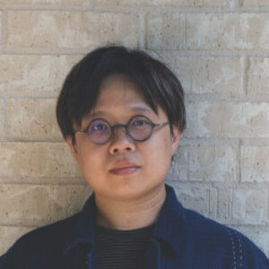
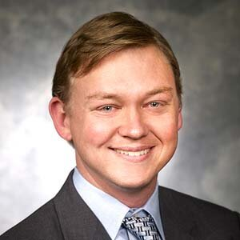

Sports Technology at UT Dallas
Research, innovation, and entrepreneurship in the Jonsson School
Aykut C. Satici
Associate Professor of Systems Engineering · Associate Head of Graduate Studies
Erik Jonsson School of Engineering and Computer Science, The University of Texas at Dallas
November 2, 2026
Sports technology at UT Dallas
Not a single center: a cross-department network tied to teaching and startups.
Teach
- MS in Systems Engineering and Management: Sports Technology Systems concentration (on campus and online)
- Analytics, wearables, athlete performance, fan experience
Research
- 8 faculty across 5 departments: Bioengineering, Computer Science, Electrical & Computer Eng., Materials Science, Mechanical Eng.
- Movement, AI coaching, wearables, sleep and recovery, materials
Translate
- UTDesign: every engineering and CS senior completes a company-sponsored capstone
- Institute for Innovation and Entrepreneurship, Venture Development Center, faculty spinouts
The athlete in motion
Gu Eon Kang Active
Bioengineering · Neuromuscular & Musculoskeletal Biomechanics Lab
Baseball biomechanics with UT Dallas Baseball and DFW training centers. Return-to-sport jump/landing analysis after ACL reconstruction with Texas Health Resources Sports Medicine.

Liang He Active
Computer Science
AgentCoach (CHI 2026): AI that turns tutorial videos into movement evaluation and adaptive coaching feedback, validated on sports and exercise videos.
Hao Zhou Emerging
Computer Science · Human-Aware Intelligence Lab
Full-body muscle activation from insole pressure sensors (MobiCom 2026); smart rings, earbuds, physiological sensing. Athlete monitoring is a natural next step.
Nasser Kehtarnavaz Earlier work
Electrical & Computer Eng. · Embedded Machine Learning Lab
UTD-MHAD (2015): camera + wearable inertial sensing that recognizes basketball shots, baseball swings, tennis strokes, squats.
Tags: Active: current sports/athlete project · Emerging: closely relevant new technology · Earlier work: documented past project
Recovery, physiology, and equipment
Matthew Walker Active
Bioengineering & Neuroscience · Sleep Innovation Labs
Sleep measurement and intervention tools for health and professional-athlete performance, including a brain-stimulation headband used by NBA players.
Shalini Prasad Active
Department Head, Bioengineering · Biomedical Microdevices & Nanotechnology Lab
Wearable sweat biosensors: continuous cortisol and melatonin (2026). Co-founder of EnLiSense. Advised a 2016 capstone hydration wearable for athletes.

Walter Voit Active
Materials Science & Mechanical Eng. · Director, Center for Engineering Innovation
3D-printed elastomers for running-shoe midsoles: lighter, more comfortable, more energy return. Commercialized through his spinout Adaptive3D.
Hongbing Lu Earlier work
Mechanical Engineering · Mechanics of Advanced Materials Lab
Experimental mechanics and dynamic material behavior. Supported a 2014 capstone modeling sports-related mild traumatic brain injury.
From lab to market
Spinout → acquisition
Adaptive3D (Voit): tough 3D-printable rubbers for footwear to aerospace. Launched with UT Dallas’s Venture Development Center; acquired by Desktop Metal in 2021.
Faculty-founded company
EnLiSense (Prasad, co-founder): non-invasive sweat-biomarker wearables; its CORTI platform was validated in her UT Dallas lab.
Founder-scientist
Walker brings several neurotechnology startups; his sleep-stimulation headband is already in professional sport.
Students as innovators
UTDesign capstones are proposed and mentored by companies. Example: a student team’s athlete hydration wearable (2016).
Beyond the core: potential collaborators
Transferable expertise: sports applications are possible, not yet established.
| Area | Faculty | Possible contribution |
|---|---|---|
| Wearable hardware | Ifana Mahbub, Hoi Lee, Lakshman Tamil, Dinesh Bhatia (ECE) | Low-power sensors, wearable ECG, instrumented footwear |
| Signals and AI | Mehrdad Nourani (ECE); Yi Ding, Nicholas Ruozzi (CS) | Physiological signals, on-device activity recognition, explainable video analysis |
| Immersive training | Jin Ryong Kim, Xiaohu Guo (CS) | Haptics, VR/AR, body and equipment simulation |
| Smart textiles and materials | Majid Minary, Dong Qian, Nandika D’Souza (ME) | Sensing garments, responsive apparel, cushioning and protective foams |
| Movement and rehabilitation | Wooram Park, Yonas Tadesse (ME); Seth Hays, Eric Meyers (BE) | Movement modeling, exoskeletons, rehabilitation neurotechnology |
Faculty contacts
| Faculty | Department | Theme | |
|---|---|---|---|
| Gu Eon Kang | Bioengineering | Athlete biomechanics | gueon.kang2@utdallas.edu |
| Matthew Walker | Bioengineering & Neuroscience | Sleep, recovery, neurotech | matthew.walker@utdallas.edu |
| Liang He | Computer Science | AI coaching | liang.he@utdallas.edu |
| Walter Voit | Materials Science & Mechanical Eng. | Footwear materials, commercialization | walter.voit@utdallas.edu |
| Shalini Prasad | Bioengineering | Sweat biosensors | shalini.prasad@utdallas.edu |
| Nasser Kehtarnavaz | Electrical & Computer Eng. | Motion recognition | kehtar@utdallas.edu |
| Hao Zhou | Computer Science | Wearable muscle sensing | hao.zhou@utdallas.edu |
| Hongbing Lu | Mechanical Engineering | Impact and injury mechanics | hongbing.lu@utdallas.edu |
Sports Technology at UT Dallas